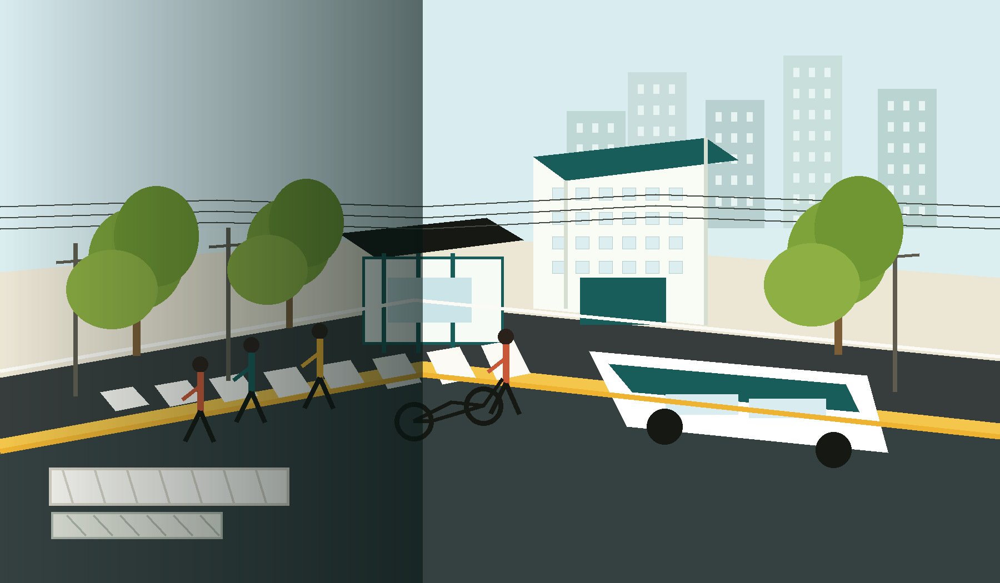

Transportasi publik adalah kapasitas, bukan aksesori.
Jalan lebar tidak otomatis mengangkut lebih banyak orang. Bus, KRL, MRT, dan prioritas ruang bisa memindahkan kota dengan lahan yang lebih efisien.
Curb2Core mengajak warga membaca kota dari hal yang paling dekat: trotoar, halte, penyeberangan, rel, drainase, hunian, dan ongkos hidup sehari-hari.
Cara pandang
Dari kontennya, Curb2Core memakai bahasa yang mudah dipahami: masalah harian warga dibedah lewat urbanisme, transportasi, dan rekayasa infrastruktur yang masuk akal.
Jalan lebar tidak otomatis mengangkut lebih banyak orang. Bus, KRL, MRT, dan prioritas ruang bisa memindahkan kota dengan lahan yang lebih efisien.
Hunian subsidi jauh dari kerja, sekolah, pasar, dan halte bisa membuat biaya hidup naik lewat bensin, waktu tempuh, dan jarak.
Parkir liar, tiang, kabel, dan got terbuka memaksa orang turun ke badan jalan. Pejalan kaki perlu ruang yang utuh, aman, dan bisa dipakai semua orang.
Panel beton di perlintasan, drainase tertutup yang benar, dan utilitas yang tertata bukan kosmetik. Itu cara membuat kota bekerja lebih lama.
Yang dibahas
Topik-topik ini diambil dari pola unggahan terbaru Curb2Core: carousel edukatif, pertanyaan tajam, dan ajakan warga untuk melihat ulang ruang kota.
Membandingkan mobil, bus, dan kereta dari sudut kapasitas orang per jam, bukan sekadar luas aspal.
Menggeser fokus dari harga unit ke biaya hidup total: akses, waktu, layanan dasar, dan lingkungan aktif.
Menjelaskan kenapa garis putih saja tidak cukup tanpa desain yang memperlambat kendaraan dan memberi prioritas.
Mengembalikan fungsi trotoar bagi ibu dengan anak, lansia, difabel, stroller, dan semua orang yang berjalan kaki.
Mengubah masalah “lubang abadi” jadi diskusi material, getaran, keselamatan, dan panel modular.
Membahas utilitas dan drainase sebagai bagian dari kenyamanan berjalan, bukan hanya urusan teknis di balik layar.
Ikut bergerak
Curb2Core membuka jalur kontribusi untuk ide topik, karya visual, kreator berbayar, dan dukungan operasional. Landing page ini mengarahkan semua pintu itu ke satu tempat.
Punya masalah kota yang layak dibedah? Mulai dari foto, lokasi, atau pertanyaan sederhana.
Infografis, foto, video, atau observasi lapangan bisa jadi bahan percakapan publik.
Untuk kreator gambar atau video yang ingin membantu produksi konten urbanisme.
Bantu riset, desain, dan publikasi konten agar percakapan kota tetap hidup.

Prinsip desain
Gaya komunikasi Curb2Core cocok untuk halaman yang lugas: judul besar, contoh konkret, dan ajakan tindakan. Bukan brosur institusi, melainkan ruang warga untuk bertanya kenapa kota kita dirancang seperti ini dan bagaimana memperbaikinya.
Blog
Versi panjang dari isu-isu kota yang sering muncul di feed: ditulis dalam format yang rapi untuk pembaca, mesin pencari, dan crawler AI.
{{ post.description | escape }}
Kota untuk manusia
Kirim foto, lokasi, atau keresahan kecil yang sering dianggap biasa. Bisa jadi, dari satu curb lahir percakapan besar tentang cara kota bergerak.